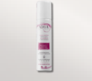
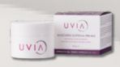
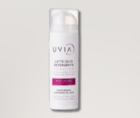
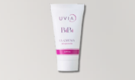
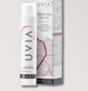
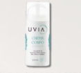
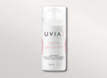
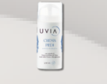
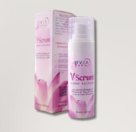

Acqua di vinaccia d'uva Nero di Troia con proprietà lenitive, vasoprotettive e astringenti. Ricca di sali minerali, tonifica, rinfresca e combatte irritazioni e infiammazioni con proprietà cicatrizzanti altamente efficaci."

GRAPE WATER
Acqua di vinaccia di uva Nero di Troia con proprietà lenitive, vasoprotettrici e astringenti.

SUPREME PRO-AGE MASK
Trattamento intensivo a tripla azione con peptidi ed estratti vegetali: idrata, migliora l'elasticità e stimola il collagene.

SUBLIME CLEANSING OIL MILK
La detersione del viso è un passaggio fondamentale in ogni routine di bellezza, poiché rimuove le cellule morte, le impurità e l'eccesso di sebo, migliorando la luminosità della pelle e idratandola.

PRO-AGE REGENERATING CREAM
Trattamento nutriente e rassodante che stimola le funzioni vitali della pelle, riduce le rughe e dona compattezza e luminosità.

BIBÌ THE WONDERFUL CREAM
Una crema ricca con SPF 15 e proprietà anti-inquinamento.

PRO-AGE HAND CREAM
Trattamento mani antietà con estratto di uva biologica e Peptide Progeline.

NOURISHING BODY CREAM
Formula fluida con principi attivi vegetali di Aloe, Malva e vinaccia di uva Nero di Troia.

LIPOACTIVE BODY CREAM
Trattamento mirato per il rimodellamento localizzato e la riduzione dei depositi adiposi. Stimola il microcircolo, combatte l'infiammazione e favorisce l'eliminazione delle tossine.

SOFTENING FOOT CREAM
Formulata per ammorbidire callosità, duroni e talloni screpolati.

VULVAR SERUM
Un siero intimo innovativo che dona elasticità, benessere e protezione alla zona vulvare e peri-vulvare.